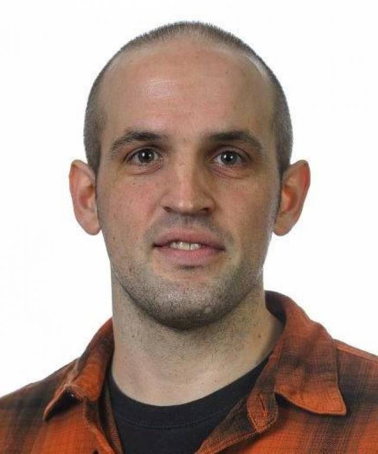
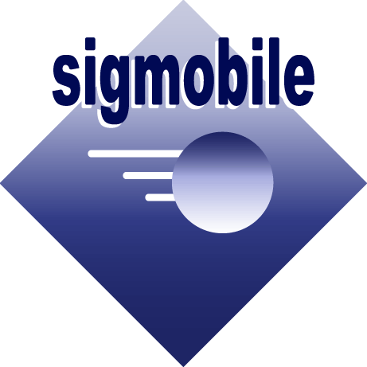

Prior Iterations of the Workshop
Co-located with MobiSys 2017
1st International Workshop on Embedded and Mobile Deep Learning
23rd June 2017 -- Niagara Falls, NY
Co-located with MobiSys 2018
2nd International Workshop on Embedded and Mobile Deep Learning
15th June 2018 -- Munich, Germany
Co-located with MobiSys 2019
3rd International Workshop on Embedded and Mobile Deep Learning
21st June 2019 -- Seoul, South Korea
-
Keynote Speakers
Christos Bouganis
Imperial College London
Koen Helwegen
Plumerai Research Adrià Gascón
Google
Important Dates
- Paper Submission Deadline:
May 15th - 11:59PM AOEJune 5th - 11:59PM AOE - Author Notification:
June 29th - WiP and Demo Deadline:
May 30th - 11:59PM AOE - Workshop Event:
Monday, 25th Sept 2020
- Paper Submission Deadline:
Call for Papers [PDF]
Committees
Keynote Talks
Attendee Information
Technical Program
Prior Workshops
Submissions
